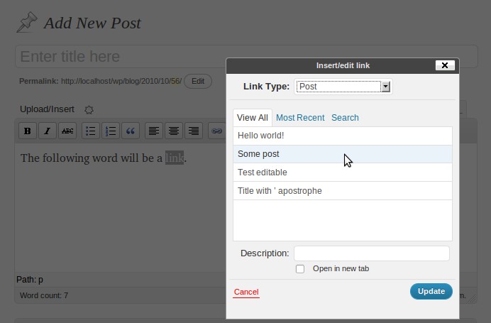

WordPress: What's Next?
Cristi Burcă (a.k.a scribu)
WP Core Committer
web scribu.net twitter @scribu
core committer = puteti sa dati vina si pe mine :)
WordPress 3.1
small release
November, 15th: first beta
December, 15th: stable release
3.org
Sortable columns

post-uri, categorii, utilizatori etc.
functionalitatea pentru care mi s-a dat commit access
Admin bar
preluata de pe wordpress.com
aranjarea meniurilor nu e finala
usor de dezactivat
Internal linking

extensie a editorului vizual
Network administration
spatiu separat pentru administrarea retelei
interfata e finisata pentru a fi scalabila
For developers
advanced taxonomy queries
custom post type indexes
get_users()
...
and many more
diferente cat mai putine intre tipurile de date predefinite si cele custom